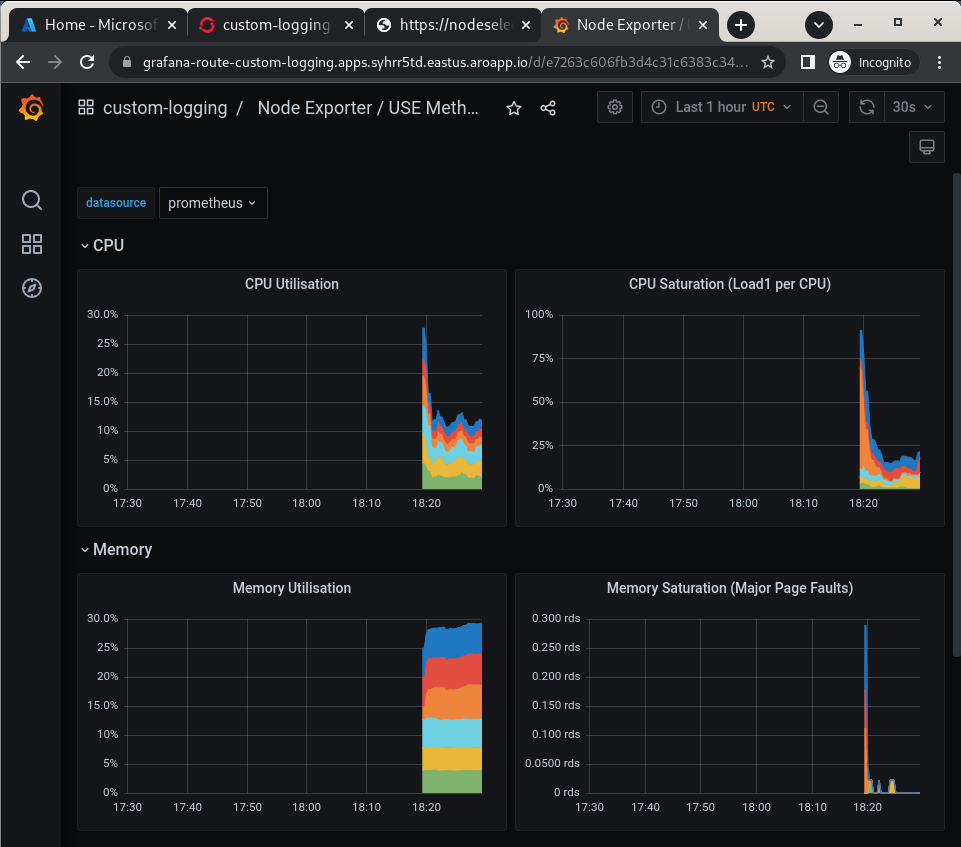
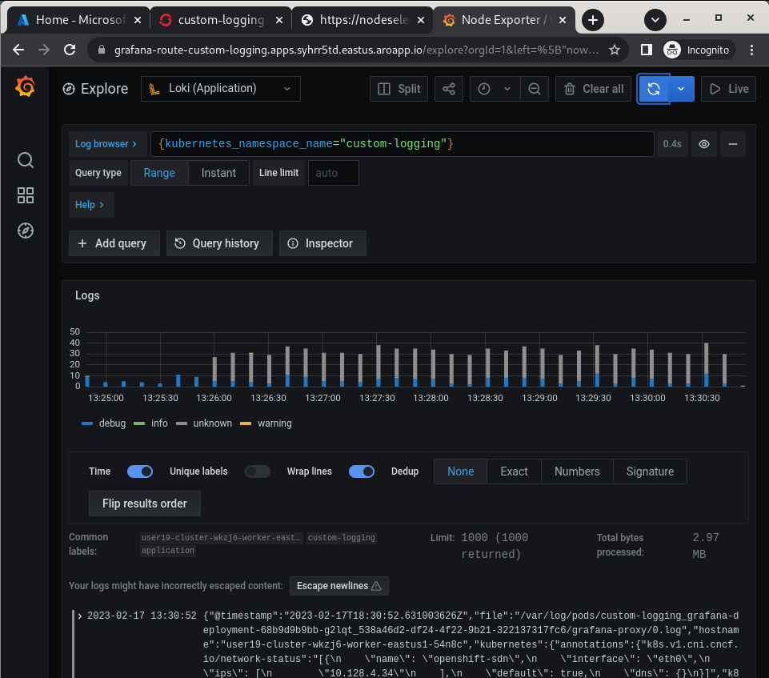

Configure Metrics and Log Forwarding to Azure Files#
OpenShift stores logs and metrics inside the cluster by default, however it also provides tooling to forward both to various locations. Here we will configure ARO to forward logs and metrics to Azure Files and use Grafana to view them.
-
Create a Storage Account
-
Fetch your storage account key
-
Create a storage bucket for logs
-
Create a storage bucket for metrics
-
Deploy ElasticSearch CRDs (not used, but needed for a bug workaround)
-
Set up the MOBB Helm Chart Repository
-
Create a project to deploy the Helm charts into
-
Create list of Operators to install
cat <<EOF > clf-operators.yaml subscriptions: - name: grafana-operator channel: v4 installPlanApproval: Automatic source: community-operators sourceNamespace: openshift-marketplace - name: cluster-logging channel: stable installPlanApproval: Automatic source: redhat-operators sourceNamespace: openshift-marketplace namespace: openshift-logging - name: loki-operator channel: stable installPlanApproval: Automatic source: redhat-operators sourceNamespace: openshift-marketplace namespace: openshift-operators-redhat - name: resource-locker-operator channel: alpha installPlanApproval: Automatic source: community-operators sourceNamespace: openshift-marketplace namespace: resource-locker-operator operatorGroups: - name: custom-logging targetNamespace: ~ - name: openshift-logging namespace: openshift-logging targetNamespace: openshift-logging - name: openshift-operators-redhat namespace: openshift-operators-redhat targetNamespace: all - name: resource-locker namespace: resource-locker-operator targetNamespace: all EOF -
Deploy the Grafana, Cluster Logging, and Loki Operator from the file just created above using Helm
-
Wait for the Operators to be installed
These will loop through each type of resource until the CRDs for the Operators have been deployed. Eventually you'll see the message
No resources found in custom-logging namespace.and be returned to a prompt. -
Deploy Helm Chart to deploy Grafana and forward metrics to Azure
-
Validate Grafana is accessible, by fetching it's Route and browsing to it with your web browser.
Warning
If your browser displays an error that says 'Application is not available' wait a minute and try again. If it persists you've hit a race condition with certificate creation. Run the following command to try to resolve it
oc patch -n custom-logging service grafana-alert -p '{ "metadata": { "annotations": null }}' oc -n custom-logging delete secret aro-thanos-af-grafana-cr-tls oc patch -n custom-logging service grafana-service \ -p '{"metadata":{"annotations":{"retry": "true" }}}' sleep 5 oc -n custom-logging rollout restart deployment grafana-deployment -
Deploy Helm Chart to enable Cluster Log forwarding to Azure
-
Wait for the Log Collector agent to be started
-
Restart Log Collector
Info
Sometimes the log collector agent starts before the operator has finished configuring Loki, restarting it here will resolve.
View the Metrics and Logs#
Now that the Metrics and Log forwarding is set up we can view them in Grafana.
-
Fetch the Route for Grafana
-
Browse to the provided route address in the same browser window as your OCP console and login using your OpenShift credentials (either AAD or kubeadmin).
-
View an existing dashboard such as custom-logging -> Node Exporter -> USE Method -> Cluster.
These dashboards are copies of the dashboards that are available directly on the OpenShift web console under Observability

-
Click the Explore (compass) Icon in the left hand menu, select “Loki (Application)” in the dropdown and search for
{kubernetes_namespace_name="custom-logging"}